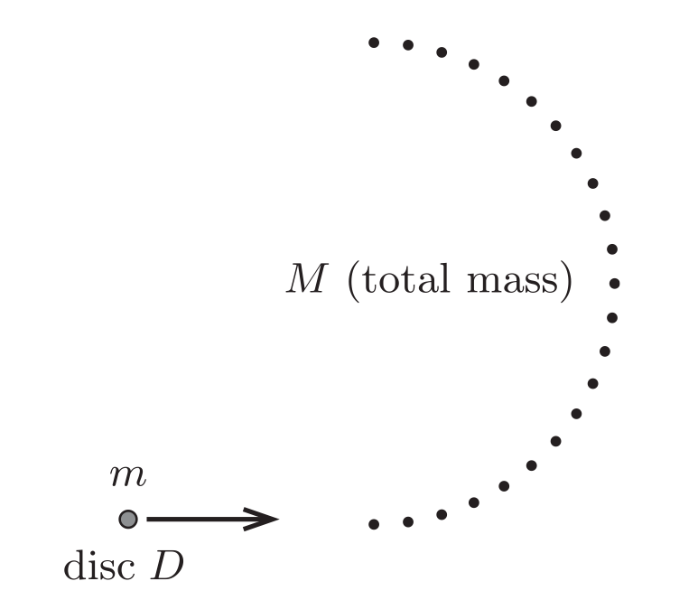

Y16 (2016) — English translation
On the air hockey table there are $N$ identical small pucks, evenly arranged in a semicircle (see picture); the total mass of the washers is $M$. Another small washer, disc $D$, of mass $m$, slides in a direction perpendicular to the diameter of this semicircle and collides with the first of the stationary washers. By some miracle it happened that later it collided with all the other $N-1$ washers in order, after which it continued to move in the direction opposite to the initial one. All collisions are absolutely elastic; friction can be neglected everywhere.

Source: https://pho.rs/p/2220